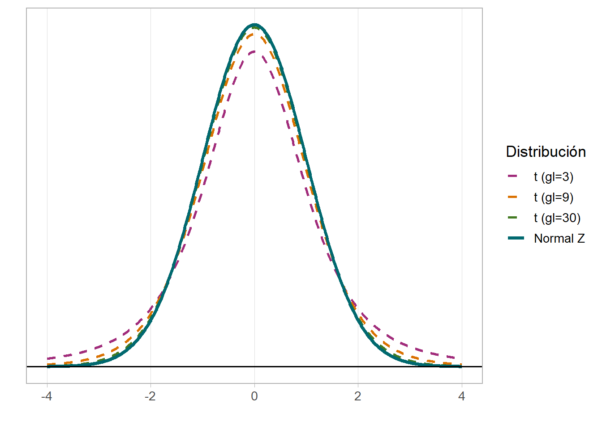

4 Distribuciones de probabilidad
4.1 Objetivos del capítulo
Al finalizar este capítulo, el lector será capaz de:
- Definir los conceptos de experimento, espacio muestral, evento y probabilidad
- Aplicar las operaciones de conjuntos (unión, intersección, complemento) a eventos
- Distinguir entre variables aleatorias discretas y continuas
- Comprender el concepto de función de densidad de probabilidad
- Describir las propiedades de la distribución Normal y calcular probabilidades con R
- Describir las propiedades de la distribución \(t\) de Student y reconocer su relación con la distribución Normal
- Calcular probabilidades usando las funciones
pnorm(),qnorm(),pt()yqt()en R
4.2 Conceptos fundamentales de probabilidad
En muchas situaciones cotidianas se utiliza con frecuencia el término probabilidad, para expresar la posibilidad de obtener un resultado. Para sucesos aleatorios, la probabilidad se define como la proporción (frecuencia relativa) de veces que se obtiene el resultado en una extensa secuencia de observaciones. Aunque es un número entre \(0\) y \(1\), es común representarla como porcentaje. Por ejemplo, cuando se reporta que la probabilidad de lluvia es del \(70\%\), se interpreta que en muchos días pasados con condiciones similares, en el \(70\%\) de ellos hubo precipitaciones.
Definición 4.1 Un experimento es un procedimiento o proceso cuyos resultados son conocidos pero no predecibles.
Definición 4.2 El espacio muestral es el conjunto de todos los posibles resultados de un experimento. Se representa con la letra griega \(\Omega\).
Definición 4.3 Cualquier subconjunto del espacio muestral se denomina evento.
TipEjemplo agrícola
Consideremos el experimento de seleccionar una planta de maíz de una parcela y observar si presenta síntomas de plaga. El espacio muestral es \(\Omega = \{\text{con plaga}, \text{sin plaga}\}\). El evento \(E = \{\text{con plaga}\}\) es un subconjunto de \(\Omega\).
4.3 Operaciones de conjuntos
Supongamos los eventos \(E_1\), \(E_2\), \(\ldots\), \(E_n\) que son subconjuntos del espacio muestral \(\Omega\).
Definición 4.4 El evento \(E_1 \cup E_2\) (unión) consiste de todos los resultados presentes en \(E_1\) o \(E_2\) (o ambos).
Definición 4.5 El evento \(E_1 \cap E_2\) (intersección) consiste de todos los resultados presentes en \(E_1\) y \(E_2\) simultáneamente.
Definición 4.6 El conjunto vacío \(\emptyset\) es el conjunto que no contiene elementos: \(n(\emptyset) = 0\).
Definición 4.7 Dos eventos \(E_1\) y \(E_2\) son mutuamente excluyentes si \(E_1 \cap E_2 = \emptyset\).
Definición 4.8 Los eventos \(E_1\), \(E_2\), \(\ldots\), \(E_k\) son colectivamente exhaustivos si \(E_1 \cup E_2 \cup \ldots \cup E_k = \Omega\).
Definición 4.9 El complemento del evento \(E_1\), denotado \(\overline{E_1}\) o \(E_1^C\), consiste de todos los resultados de \(\Omega\) que no pertenecen a \(E_1\).
4.4 Definición de probabilidad
Definición 4.10 Si un experimento tiene \(n(\Omega)\) resultados posibles y un evento \(E\) tiene \(n(E)\) resultados, la probabilidad de \(E\), denotada \(P(E)\), se define como:
\[P(E) = \dfrac{n(E)}{n(\Omega)} = \dfrac{\text{número de resultados en } E}{\text{número de resultados en } \Omega}\]
ImportanteAxiomas de la Probabilidad
- \(P(\Omega) = 1\)
- Para cualquier evento \(E\): \(0 \leq P(E) \leq 1\)
- Para cualquier evento \(E\): \(P(E^C) = 1 - P(E)\)
ImportantePropiedades de la Probabilidad
- Para dos eventos cualesquiera: \(P(E_1 \cup E_2) = P(E_1) + P(E_2) - P(E_1 \cap E_2)\)
- Para eventos mutuamente excluyentes: \(P(E_1 \cup E_2) = P(E_1) + P(E_2)\)
- Para eventos colectivamente exhaustivos: \(P(E_1 \cup E_2 \cup \ldots \cup E_k) = 1\)
TipEjemplo: muestreo de frutos
En un lote de 50 frutos de cacao, 12 presentan daño por monilia y 8 por mazorca negra. Si se selecciona un fruto al azar:
- \(P(\text{monilia}) = 12/50 = 0.24\)
- \(P(\text{mazorca negra}) = 8/50 = 0.16\)
- \(P(\text{monilia o mazorca negra}) = (12 + 8)/50 = 0.40\) (son mutuamente excluyentes)
- \(P(\text{sin daño}) = 1 - 0.40 = 0.60\)
4.5 Distribuciones de probabilidad
4.5.1 Variable aleatoria
Definición 4.11 Una variable aleatoria es una función que asigna un número a cada resultado de un experimento.
Existen dos tipos:
- Discretas: valores contables (número de plantas enfermas, número de semillas germinadas)
- Continuas: valores incontables en un intervalo (peso de frutos, altura de plantas, tiempo de cosecha)
TipEjemplo con monedas
En el lanzamiento de tres monedas, si \(X =\) número de sellos, los valores posibles son \(\{0, 1, 2, 3\}\) con probabilidades:
| \(x\) | 0 | 1 | 2 | 3 |
|---|---|---|---|---|
| \(P(X=x)\) | 1/8 | 3/8 | 3/8 | 1/8 |
x <- 0:3
prob <- dbinom(x, size = 3, prob = 0.5)
data.frame(x = x, `P(X=x)` = prob) |> knitr::kable(digits = 4)| x | P.X.x. |
|---|---|
| 0 | 0.125 |
| 1 | 0.375 |
| 2 | 0.375 |
| 3 | 0.125 |
4.5.2 Funciones de Densidad de Probabilidad
Para variables continuas, la distribución de probabilidad se describe mediante una función de densidad de probabilidad \(f(x)\). Las propiedades de estas funciones son:
- El área bajo la curva es igual a \(1\): \(\int_{-\infty}^{\infty} f(x)\,dx = 1\)
- La probabilidad de que \(X\) se encuentre en el intervalo \((a, b)\) es el área bajo la curva entre \(a\) y \(b\): \(P(a < X < b) = \int_a^b f(x)\,dx\)
- \(P(X = c) = 0\) para cualquier valor puntual \(c\)
4.6 Distribución Normal
La distribución de probabilidad más usada para describir variables aleatorias continuas es la distribución Normal. Se encuentra en variables como altura de plantas, peso de frutos, rendimiento de cultivos, mediciones de laboratorio, entre otras.
4.6.1 Función de densidad y parámetros
La función de densidad de la distribución Normal es:
\[ f(x) = \dfrac{1}{\sigma\sqrt{2\pi}}\, e^{-\dfrac{(x-\mu)^2}{2\sigma^2}} \tag{4.1}\]
Como se observa en la Ecuación 4.1, la distribución Normal tiene dos parámetros:
- \(\mu\) = media: parámetro de localización (desplaza la curva horizontalmente)
- \(\sigma\) = desviación estándar: parámetro de forma (controla el ancho de la curva)
Cuando una variable \(X\) sigue una distribución Normal se escribe \(X \sim \mathcal{N}(\mu, \sigma)\).
4.6.2 Propiedades de la distribución Normal
ImportantePropiedades
- Es simétrica respecto a la media \(\mu\) (moda = mediana = media)
- La curva tiene forma de campana
- El área total bajo la curva es \(1\)
- La curva se extiende de \(-\infty\) a \(+\infty\) pero se aproxima a \(0\) en las colas
La curva gris punteada es la referencia \(\mathcal{N}(0,1)\).
4.6.3 Regla empírica (68-95-99.7)
Una propiedad práctica muy importante de la distribución Normal es la regla empírica:
ImportanteRegla empírica
- El 68.3% de los valores se encuentra entre \(\mu - \sigma\) y \(\mu + \sigma\)
- El 95.4% de los valores se encuentra entre \(\mu - 2\sigma\) y \(\mu + 2\sigma\)
- El 99.7% de los valores se encuentra entre \(\mu - 3\sigma\) y \(\mu + 3\sigma\)
4.6.4 Distribución Normal Estándar
Para calcular probabilidades de cualquier distribución \(\mathcal{N}(\mu, \sigma)\) se utiliza la estandarización: transformar \(X\) a una variable \(Z\) con media \(0\) y desviación \(1\):
\[ Z = \dfrac{X - \mu}{\sigma}, \quad Z \sim \mathcal{N}(0,1) \tag{4.2}\]
En este texto usaremos R para calcular probabilidades directamente sin tablas.
4.6.5 Cálculo de probabilidades con R
R ofrece cuatro funciones para la distribución Normal:
| Función | Descripción |
|---|---|
dnorm(x, mean, sd) |
Valor de la función de densidad \(f(x)\) |
pnorm(q, mean, sd) |
Probabilidad acumulada \(P(X \leq q)\) |
qnorm(p, mean, sd) |
Cuantil: valor \(x\) tal que \(P(X \leq x) = p\) |
rnorm(n, mean, sd) |
Genera \(n\) valores aleatorios normales |
TipEjemplo: rendimiento de cacao
El rendimiento de una variedad de cacao se distribuye normalmente con media \(\mu = 800\) kg/ha y desviación \(\sigma = 80\) kg/ha. Es decir, \(X \sim \mathcal{N}(800, 80)\).
a) ¿Qué probabilidad hay de que una parcela rinda más de 900 kg/ha?
\[P(X > 900) = 1 - P(X \leq 900)\]
1 - pnorm(900, mean = 800, sd = 80)[1] 0.1056498b) ¿Qué probabilidad hay de que rinda entre 700 y 900 kg/ha?
\[P(700 < X < 900) = P(X \leq 900) - P(X \leq 700)\]
pnorm(900, mean = 800, sd = 80) - pnorm(700, mean = 800, sd = 80)[1] 0.7887005c) ¿Cuál es el rendimiento mínimo del 10% de parcelas con mayor producción?
qnorm(0.90, mean = 800, sd = 80)[1] 902.52414.7 Distribución \(t\) de Student
La distribución \(t\) de Student fue obtenida por William S. Gosset en 1908, quien publicó sus hallazgos bajo el seudónimo Student. La distribución \(t\) es fundamental en inferencia estadística, especialmente cuando la desviación de la población es desconocida y el tamaño muestral es pequeño.
4.7.1 Función de densidad y grados de libertad
\[ f(t) = \dfrac{\Gamma\!\left[\dfrac{\nu+1}{2}\right]}{\sqrt{\nu\pi}\;\Gamma\!\left(\dfrac{\nu}{2}\right)}\left[1 + \dfrac{t^2}{\nu}\right]^{-\frac{\nu+1}{2}} \tag{4.3}\]
El parámetro \(\nu\) (letra griega nu) se llama grados de libertad y determina la forma de la distribución. Para un problema con muestra de tamaño \(n\), generalmente \(\nu = n - 1\).
4.7.2 Propiedades de la distribución \(t\)
ImportantePropiedades
- Es simétrica respecto a \(0\) (igual que la Normal estándar)
- Tiene forma de campana, pero con colas más pesadas que la Normal
- A mayor \(\nu\) (más grados de libertad), la \(t\) se aproxima a la \(\mathcal{N}(0,1)\)
- Para \(\nu > 30\) la diferencia con \(\mathcal{N}(0,1)\) es prácticamente despreciable
4.7.3 Cálculo de probabilidades con R
Al igual que con la distribución Normal, R ofrece cuatro funciones para la distribución \(t\):
| Función | Descripción |
|---|---|
dt(x, df) |
Valor de la función de densidad \(f(t)\) |
pt(q, df) |
Probabilidad acumulada \(P(T \leq q)\) |
qt(p, df) |
Cuantil: valor \(t\) tal que \(P(T \leq t) = p\) |
rt(n, df) |
Genera \(n\) valores aleatorios \(t\) |
TipEjemplo: valor crítico para prueba de hipótesis
En un experimento con \(n = 15\) parcelas de banano se quiere realizar una prueba de hipótesis con un nivel de significancia \(\alpha = 0.05\) (dos colas). Los grados de libertad son \(\nu = n - 1 = 14\).
¿Cuál es el valor crítico \(t_{0.025, 14}\)?
# Valor crítico t (cola derecha, α/2 = 0.025, gl = 14)
qt(0.975, df = 14)[1] 2.144787¿Cuánta probabilidad hay de observar un valor \(|t| > 2.5\) con 14 gl?
# P(|T| > 2.5) con 14 gl (prueba bilateral)
2 * pt(-2.5, df = 14)[1] 0.025466664.7.4 Comparación Normal estándar vs \(t\) de Student

4.8 Resumen comparativo: Normal vs \(t\) de Student
| Característica | Normal \(\mathcal{N}(\mu, \sigma)\) | \(t\) de Student \(t(\nu)\) |
|---|---|---|
| Parámetros | \(\mu\) y \(\sigma\) | \(\nu\) (grados de libertad) |
| Media | \(\mu\) | \(0\) |
| Varianza | \(\sigma^2\) | \(\nu/(\nu-2)\) para \(\nu > 2\) |
| Forma | Campana | Campana con colas más pesadas |
| Uso típico | \(\sigma\) conocida o \(n\) grande | \(\sigma\) desconocida y \(n\) pequeño |
| Convergencia | — | \(t(\nu) \to Z\) cuando \(\nu \to \infty\) |
Ejercicios
- En una finca se monitorean 40 plantas de tomate y se clasifican como: sanas (22), con virus (10), con plaga (8). Si se selecciona una planta al azar:
- ¿Cuál es el espacio muestral \(\Omega\)?
- Calcule \(P(\text{con virus})\), \(P(\text{sin virus})\) y \(P(\text{con virus o plaga})\).
- Verifique en R que la suma de todas las probabilidades es 1.
- El peso de frutos de aguacate de una variedad sigue una distribución Normal con media \(\mu = 320\) g y desviación \(\sigma = 45\) g.
- ¿Qué porcentaje de frutos pesa entre 275 g y 365 g? (Use la regla empírica)
- Calcule \(P(X > 400)\) usando
pnorm(). - ¿Cuál es el peso del fruto que supera al 95% de la producción? Use
qnorm().
- La altura de plantas de banano en cierta parcela sigue \(X \sim \mathcal{N}(250, 20)\) cm.
- Grafique la distribución en R usando
ggplot2. - Calcule \(P(230 < X < 270)\) y verifique que coincide con la regla empírica.
- Estandarice el valor \(x = 280\) cm usando la Ecuación 4.2 y calcule \(P(Z > z)\).
- Grafique la distribución en R usando
- En un ensayo con \(n = 10\) tratamientos de fertilización se quiere evaluar si el rendimiento promedio difiere de un valor de referencia (\(\alpha = 0.05\), bilateral).
- ¿Cuántos grados de libertad tiene la prueba?
- Calcule el valor crítico \(t_{\alpha/2, \nu}\) con
qt(). - Compare el valor crítico con \(z = 1.96\) y explique la diferencia.
- Genere 500 valores de \(X \sim \mathcal{N}(150, 25)\) usando
rnorm(). Construya un histograma conggplot2y superponga la curva de densidad teórica. Comente si los datos generados se ajustan bien a la distribución teórica.